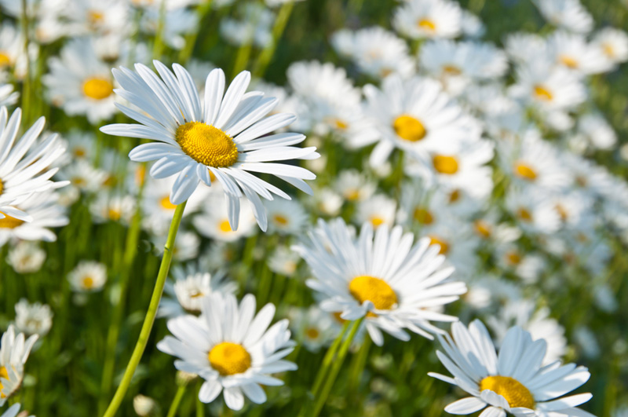

Daisy |
||
|---|---|---|
|
ข้อมูลเบื้องต้นเดซี่ (ชื่อภาษาอังกฤษ:Daisy) ความสำคัญทางเศรษฐกิจเดซี่ สามารถปลูกได้ทั้งในกระถาง ลงแปลง และปลูกลงดิน สำหรับวิธีปลูกเดซี่ควรย่อยดินให้ละเอียด ใช้ดินที่ไม่อุ้มน้ำมากนัก เช่น ดินร่วนปนทราย นิยมขยายพันธุ์ 2 วิธีคือ ปักชำและเพาะเมล็ด แต่ส่วนใหญ่จะใช้การเพาะเมล็ด เพราะจะทำให้ต้นแข็งแรงและทนร้อนได้ดีกว่า ในช่วงแรกควรวางกระถางหรือกระบะในที่ที่มีแสงสว่างก่อน แล้วรอให้ต้นเริ่มงอกและแข็งแรงพอ ค่อยย้ายไปปลูกกลางแจ้งหรือบริเวณที่มีแดดครึ่งวัน-เต็มวัน |
 |
จัดทำโดยชื่อ : นางสาวพิจักขณา จันทับหลวงรหัสนศ : 632110348 |
||